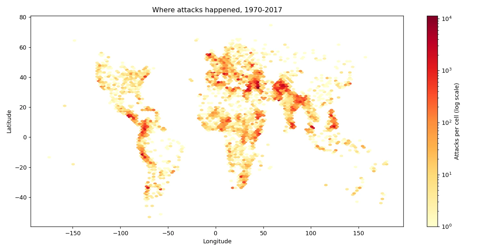
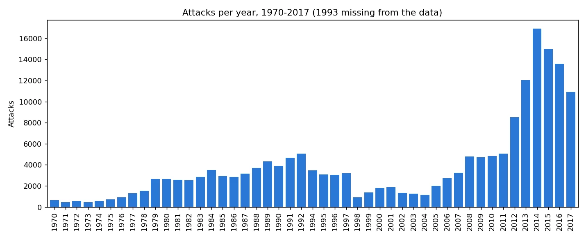
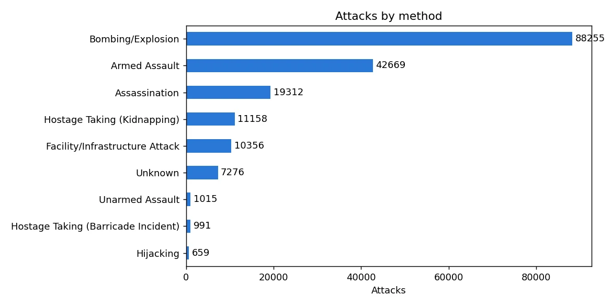

Work/PRJ-10/Exploratory analysis · World
Global terrorism, 1970–2017: where attacks happen, and how
Mostly in Iraq, Pakistan and Afghanistan, which had 46% of all attacks in 2012–2017. And mostly bombings: 49% of the 181,691 attacks from 1970 to 2017.
- Data
- Global Terrorism Database (START, University of Maryland): 181,691 attacks
- Period
- 1970–2017 (1993 is missing)
- Tools
- Python, pandas, matplotlib
- Code
- github.com/BoredMongoose/Terrorism_analysis ↗
Business question
Where do terrorist attacks happen most, and what kind of attacks are they?
Recommendation
Put prevention effort where the attacks are: those three countries, and bombings first. In Central America and Sub-Saharan Africa, plan for armed assaults too, which are as common as bombings there.
Estimated impact46%
Of attacks in 2012–2017 happened in just three countries: Iraq, Pakistan and Afghanistan.
01Results
Where the attacks happened.



02How I did it
From raw data to a decision.
- Loaded the 181,691-row file with pandas and kept the dozen columns I needed.
- Counted attacks by year, country, region and attack type with groupby and value_counts.
- Checked the data: 1993 is missing, 45.6% of attacks have no known group, some casualty numbers are blank, and one longitude was impossible (−86,185,896), which I fixed by putting the decimal point back.
- Drew every attack's location as a density map, so the busiest places stand out.
03What could make this wrong
The limits, said out loud.
- 01Different teams collected the data over the years, so some changes may come from how attacks were counted.
- 02Blank killed and wounded numbers are counted as 0, so casualties are a little too low.
- 03Two 2001 US rows look like one event recorded twice.
04What I learned
- 01Check the data before trusting a chart: one longitude of −86,185,896 squashed my first map into a line.
- 02A total hides the story: the 2014 peak came mostly from three countries, and the earlier rise from three different ones (Peru, El Salvador and Colombia).
- 03Say what's missing: 45.6% of attacks have no known group, and 1993 isn't in the data at all.
05What I'd do next
- 01Check the two 2001 US rows that look like one event recorded twice.
- 02Look at attacks per million people, not just counts, so big countries don't dominate.
- 03Add 2018 onwards when a newer version of the database is available.